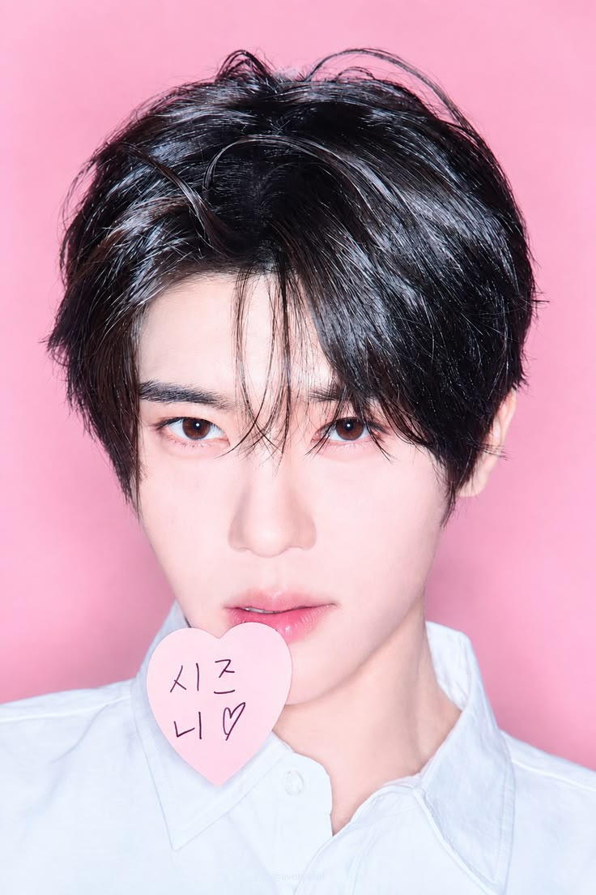
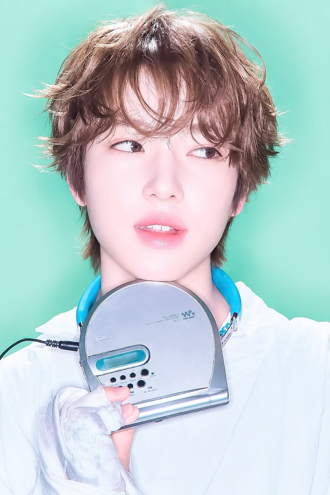

Artikel Terbaru
Awal Debut NCT WISH
8 November 2026
Cerita singkat tentang bagaimana NCT WISH memulai debutnya.
Read MoreMengenal Fandom NCTzen
8 November 2026
Sedikit informasi tentang fandom yang mendukung NCT WISH.
Read MoreBiografi
NCT WISH adalah grup boy group beranggotakan enam orang di bawah naungan SM Entertainment, sekaligus menjadi sub-unit terakhir dari brand NCT. Grup ini dibentuk melalui program survival tahun 2023, NCT Universe: LASTART, dan tampil di Tokyo Dome pada 21 Februari 2024. Album single bertajuk WISH kemudian dirilis pada 28 Februari 2024.
Meskipun susunan anggota final awalnya diumumkan terdiri dari tujuh orang, salah satu trainee, Jungmin, memutuskan untuk mengundurkan diri dari grup pada 2 Oktober 2023 karena masalah kesehatan, sebelum debut resmi mereka. Hal tersebut telah dikonfirmasi melalui pengumuman resmi SM Entertainment.
Dengan demikian, NCT WISH melanjutkan aktivitasnya dengan enam anggota, yaitu Sion (Leader), Riku, Yushi, Jaehee, Ryo, dan Sakuya.
Kembali ke atasMember

SionLeader, Lead Vocalist
Asal: Mokpo, Korea
Main Rapper
Asal: Fukui, Jepang
Main Dancer
Asal: Tokyo, Jepang
Main Vocalist
Asal: Daegu, Korea
Sub Vocalist
Asal: Kyoto, Jepang

SakuyaLead Rapper, Sub Vocalist, Maknae
Asal: Saitama, Jepang
Group Info
| Nama Grup | NCT WISH |
| Agensi | SM Entertainment |
| Grup Induk | NCT |
| Jumlah Member | 6 orang |
| Debut | Februari 2024 |
| Fandom | NCTzen |
Visi & Misi Fanbase
Visi: Menjadi tempat informasi NCT WISH yang rapi dan mudah dibaca.
Misi:
- Menyajikan profil member dan grup secara jelas.
- Membagikan artikel dan kabar terbaru.
- Menjadi tempat berkumpul sesama penggemar.
Awal Debut NCT WISH
8 November 2026
Awal Debut NCT WISH
NCT WISH resmi memulai perjalanan debutnya pada Februari 2024. Sebelum diperkenalkan sebagai unit terakhir dari NCT, grup yang beranggotakan Sion, Riku, Yushi, Jaehee, Ryo, dan Sakuya ini lebih dahulu dikenal dengan nama NCT NEW TEAM. Mereka menjalani sejumlah kegiatan pradebut di Jepang untuk memperkenalkan para anggota sekaligus membangun kedekatan dengan penggemar.
Momen debut NCT WISH diawali dengan penampilan mereka di Tokyo Dome, Jepang, pada 21 Februari 2024, dalam acara SMTOWN LIVE 2024 SMCU PALACE @TOKYO. Penampilan tersebut menjadi kesempatan bagi NCT WISH untuk tampil di hadapan publik sebagai bagian dari keluarga besar NCT. Kehadiran mereka di salah satu panggung musik terbesar di Jepang sekaligus menandai babak baru perjalanan grup setelah melewati masa pradebut.
Tak berselang lama, tepatnya pada 28 Februari 2024, NCT WISH resmi merilis single album debut bertajuk WISH. Album tersebut berisi dua lagu, yakni "WISH" sebagai lagu utama dan "Sail Away" sebagai lagu pendamping. Melalui album ini, NCT WISH memperkenalkan warna musik dengan nuansa ceria, segar, dan energik yang mencerminkan karakter mereka sebagai grup dengan semangat anak muda.
Lagu "WISH" membawa pesan tentang harapan dan keinginan untuk meraih impian. Tema tersebut juga tercermin dalam slogan grup, "WISH for Our WISH", yang menghubungkan harapan para anggota dengan impian para penggemar. Sejalan dengan arah aktivitas grup, NCT WISH juga merilis karya dalam bahasa Korea dan Jepang untuk menjangkau pendengar di kedua negara tersebut.
Kehadiran NCT WISH mendapat sambutan antusias dari para penggemar, terutama NCTzen yang telah mengikuti perjalanan mereka sejak program survival NCT Universe: LASTART. Perilisan album debut ini menjadi langkah awal bagi NCT WISH dalam membangun identitas musik sekaligus memperluas jangkauan mereka di industri K-pop dan J-pop. Dengan debut tersebut, NCT WISH memulai perjalanan baru sebagai unit keenam sekaligus unit terakhir dalam proyek NCT.
Kembali ke daftar artikelSingle Pertama "Wish"
8 November 2026
NCT WISH resmi memperkenalkan karya debut mereka melalui single album bertajuk WISH yang dirilis pada 28 Februari 2024. Album ini menjadi langkah awal bagi grup tersebut dalam memperkenalkan identitas musik dan konsep mereka kepada publik. Mengusung nuansa ceria, segar, dan penuh energi, NCT WISH menghadirkan warna musik yang mencerminkan karakter serta semangat keenam anggotanya.
Lagu utama "WISH" menggabungkan genre old-school hip-hop dengan irama medium-tempo dance. Perpaduan tersebut menghasilkan musik dengan nuansa ritmis dan melodi yang mudah diingat. Tidak hanya menonjolkan sisi musikalitas, lagu ini juga membawa pesan tentang harapan, impian, serta semangat untuk memulai perjalanan baru. Pesan tersebut sejalan dengan slogan NCT WISH, yaitu "WISH for Our WISH", yang menggambarkan harapan para anggota untuk mewujudkan impian bersama para penggemar.
Selain lagu utama "WISH", single album ini turut memuat lagu B-side berjudul "Sail Away". Lagu tersebut menggambarkan perjalanan menuju masa depan yang penuh kemungkinan, dengan pelayaran sebagai simbol langkah baru yang akan ditempuh oleh para anggota. Kedua lagu dalam album ini juga diperkenalkan dalam versi bahasa Korea dan Jepang, sejalan dengan aktivitas NCT WISH yang menyasar pasar musik di kedua negara tersebut.
Perilisan
Mengenal Fandom NCTzen
8 November 2026
NCTzen merupakan nama resmi fandom NCT yang diumumkan pada 12 Juni 2017. Nama tersebut merupakan gabungan dari kata NCT dan Citizen, yang memiliki makna sebagai warga atau bagian dari dunia NCT. Sebutan ini ditujukan kepada seluruh penggemar NCT, termasuk para penggemar dari berbagai unitnya, seperti NCT 127, NCT DREAM, NCT U, dan NCT WISH. Dengan demikian, NCTzen menjadi identitas yang menyatukan para penggemar dari seluruh unit di bawah naungan NCT.
Sebagai bagian dari perjalanan karier NCT, NCTzen memiliki peran penting dalam memberikan dukungan kepada setiap unit, termasuk NCT WISH. Dukungan tersebut diwujudkan melalui berbagai kegiatan, mulai dari mendengarkan dan melakukan streaming lagu, membeli album serta merchandise resmi, mengikuti voting dalam ajang penghargaan musik, hingga membagikan informasi mengenai aktivitas grup melalui media sosial. Tidak hanya secara digital, para penggemar juga kerap mengadakan berbagai proyek dukungan, seperti perayaan ulang tahun anggota, kegiatan khusus saat comeback, hingga proyek sosial yang dilakukan atas nama grup.
Khusus untuk NCT WISH, para penggemar juga memiliki komunitas fan club resmi bernama NCTzen WISH atau yang krap dikenal dengan sebutan WISHZEN, yang diperkenalkan pada Januari 2024 melalui platform Weverse. Kehadiran komunitas ini menjadi wadah bagi para penggemar untuk mengikuti informasi dan aktivitas resmi grup, sekaligus membangun interaksi yang lebih dekat dengan keenam anggota, yaitu Sion, Riku, Yushi, Jaehee, Ryo, dan Sakuya.
Keberadaan NCTzen WISH tidak terlepas dari identitas NCTzen sebagai fandom utama yang menaungi seluruh unit NCT. Keduanya menjadi bagian dari dukungan penggemar yang mengiringi perjalanan NCT WISH sejak masa pradebut hingga aktivitas mereka saat ini. Melalui berbagai bentuk dukungan tersebut, NCTzen turut berperan dalam memperkenalkan karya dan perkembangan NCT WISH kepada penggemar yang lebih luas.
Kembali ke daftar artikel